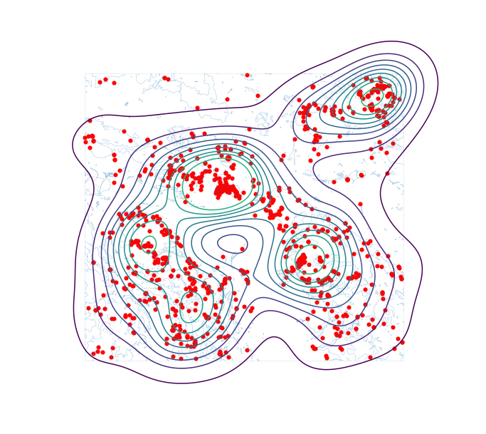
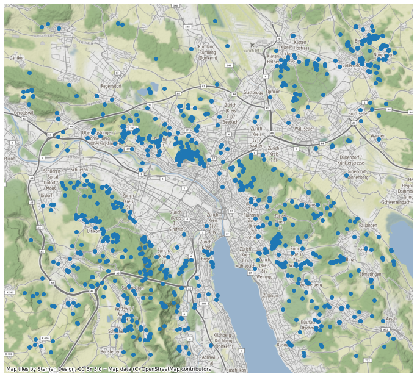
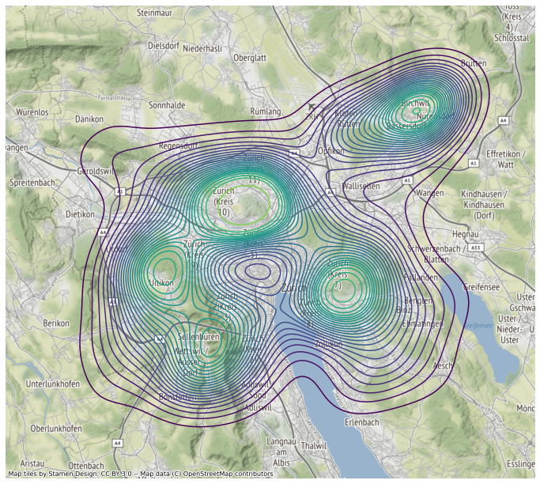

Demo: Geodaten visualisieren¶
import pandas as pd
import geopandas as gpd
import matplotlib.pyplot as plt
import descartes
zeckenstiche_full = pd.read_csv("zeckenstiche_full.csv")
wald = gpd.read_file("wald.gpkg")
zeckenstiche_gpd = gpd.GeoDataFrame(zeckenstiche_full,
geometry=gpd.points_from_xy(zeckenstiche_full['x'], zeckenstiche_full['y']),
crs = 2056)
/opt/hostedtoolcache/Python/3.7.9/x64/lib/python3.7/site-packages/geopandas/_compat.py:88: UserWarning: The Shapely GEOS version (3.8.0-CAPI-1.13.1 ) is incompatible with the GEOS version PyGEOS was compiled with (3.8.1-CAPI-1.13.3). Conversions between both will be slow.
shapely_geos_version, geos_capi_version_string
Kernel Density Plot¶
Mit der Erweiterung seaborn lassen sich mit wenigen Zeilen Code eine Kernel Density rechnen und visualisieren. Siehe nachstehenden Code:
import seaborn as sns
f, ax = plt.subplots(1, figsize=(12, 12))
wald.boundary.plot(linewidth=0.1, ax=ax)
zeckenstiche_gpd.plot(color='red', linewidth=0.1, ax=ax)
sns.kdeplot(x = zeckenstiche_full.x, y= zeckenstiche_full.y,shade = False,n_levels = 10, cmap = "viridis", ax = ax)
ax.set_axis_off()
plt.show()

Hintergrundkarte¶
Mit der Erweiterung contextily kann man sehr schnell und einfach Hintergrundkarten in den Plot einbinden. Dafür muss das GeoDataFrame vorher aber in WGS84 Koordinaten (EPSG 3857) konvertiert werden (mit to_crs, s.u.).
import contextily as ctx
f, ax = plt.subplots(1, figsize=(12, 12))
zeckenstiche_gpd.to_crs(epsg = 3857).plot(ax = ax)
ctx.add_basemap(ax)
ax.set_axis_off()
plt.show()

KDE mit Hintergrundkarte¶
Kernel Denisty und Hintergrundkarte können auch kombiniert werden:
lat = zeckenstiche_gpd.to_crs(epsg = 3857).geometry.x
lng = zeckenstiche_gpd.to_crs(epsg = 3857).geometry.y
f, ax = plt.subplots(1, figsize=(12, 12))
sns.kdeplot(x = lat,y = lng,shade = False,n_levels = 25, cmap = "viridis", ax = ax)
ctx.add_basemap(ax)
ax.set_axis_off()
plt.show()
